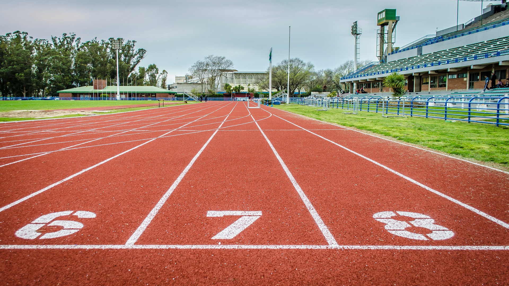
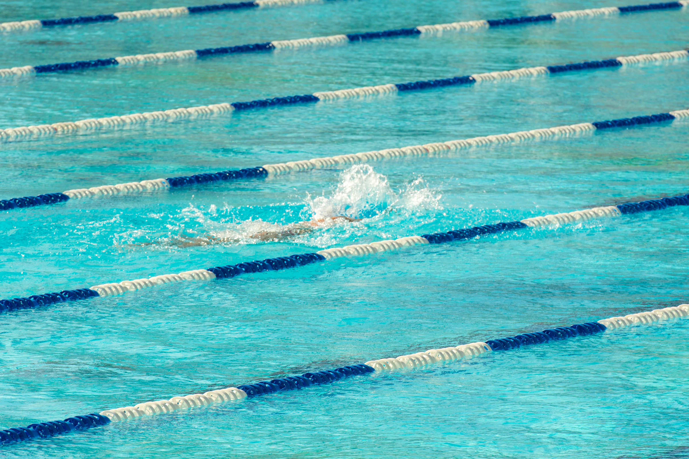

Pista de Atletismo
Nuestra pista de atletismo cuenta con ocho carriles y está equipada con la última tecnología para la práctica de todas las disciplinas atléticas. Es el lugar ideal para entrenar y mejorar tu rendimiento.

Gimnasio
Nuestro gimnasio está equipado con máquinas de última generación y áreas específicas para entrenamiento de fuerza, resistencia y flexibilidad. Contamos con entrenadores profesionales para guiar tu progreso.

Piscina Olímpica
Contamos con una piscina olímpica para entrenamiento de natación y recuperación. Ideal para complementar tu rutina de atletismo con ejercicios acuáticos.